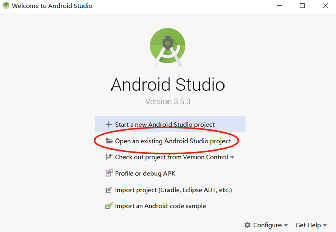

实现一个图像分类应用

概述
我们推荐你从端侧Android图像分类demo入手，了解MindSpore Lite应用工程的构建、依赖项配置以及相关API的使用。
本教程基于MindSpore团队提供的Android“端侧图像分类”示例程序，演示了端侧部署的流程。
选择图像分类模型。
将模型转换成MindSpore Lite模型格式。
在端侧使用MindSpore Lite推理模型。详细说明如何在端侧利用MindSpore Lite C++ API（Android JNI）和MindSpore Lite图像分类模型完成端侧推理，实现对设备摄像头捕获的内容进行分类，并在APP图像预览界面中，显示出最可能的分类结果。
你可以在这里找到Android图像分类模型和示例代码。
选择模型
MindSpore团队提供了一系列预置终端模型，你可以在应用程序中使用这些预置的终端模型。
MindSpore Model Zoo中图像分类模型可在此下载。
同时，你也可以使用预置模型做迁移学习，以实现自己的图像分类任务。
转换模型
如果预置模型已经满足你要求，请跳过本章节。 如果你需要对MindSpore提供的模型进行重训，重训完成后，需要将模型导出为.mindir格式。然后使用MindSpore Lite模型转换工具将.mindir模型转换成.ms格式。
以mobilenetv2模型为例，如下脚本将其转换为MindSpore Lite模型用于端侧推理。
./converter_lite --fmk=MS --modelFile=mobilenetv2.mindir --outputFile=mobilenetv2.ms
部署应用
接下来介绍如何构建和执行MindSpore Lite端侧图像分类任务。
运行依赖
Android Studio >= 3.2 (推荐4.0以上版本)
NDK 21.3
CMake 3.10.2
Android SDK >= 26
OpenCV >= 4.0.0 （本示例代码已包含）
构建与运行
在Android Studio中加载本示例源码，并安装相应的SDK（指定SDK版本后，由Android Studio自动安装）。

启动Android Studio后，点击
File->Settings->System Settings->Android SDK，勾选相应的SDK。如下图所示，勾选后，点击OK，Android Studio即可自动安装SDK。
（可选）若安装时出现NDK版本问题，可手动下载相应的NDK版本（本示例代码使用的NDK版本为21.3），并在
Project Structure的Android NDK location设置中指定SDK的位置。
连接Android设备，运行图像分类应用程序。
通过USB连接Android设备调试，点击
Run 'app'即可在你的设备上运行本示例项目。
Android Studio连接设备调试操作，可参考https://developer.android.com/studio/run/device?hl=zh-cn。
在Android设备上，点击“继续安装”，安装完即可查看到设备摄像头捕获的内容和推理结果。
识别结果如下图所示。

示例程序详细说明
本端侧图像分类Android示例程序分为JAVA层和JNI层，其中，JAVA层主要通过Android Camera 2 API实现摄像头获取图像帧，以及相应的图像处理等功能；JNI层在Runtime中完成模型推理的过程。
此处详细说明示例程序的JNI层实现，JAVA层运用Android Camera 2 API实现开启设备摄像头以及图像帧处理等功能，需读者具备一定的Android开发基础知识。
示例程序结构
app
|
├── libs # 存放MindSpore Lite依赖的库文件
│ └── arm64-v8a
│ ├── libopencv_java4.so
│ └── libmindspore-lite.so
│
├── opencv # opencv 相关依赖文件
│ └── ...
|
├── src/main
│ ├── assets # 资源文件
| | └── model.ms # 存放模型文件
│ |
│ ├── cpp # 模型加载和预测主要逻辑封装类
| | ├── ..
| | ├── MindSporeNetnative.cpp # MindSpore调用相关的JNI方法
│ | └── MindSporeNetnative.h # 头文件
│ |
│ ├── java # java层应用代码
│ │ └── com.huawei.himindsporedemo
│ │ ├── gallery.classify # 图像处理及MindSpore JNI调用相关实现
│ │ │ └── ...
│ │ └── obejctdetect # 开启摄像头及绘制相关实现
│ │ └── ...
│ │
│ ├── res # 存放Android相关的资源文件
│ └── AndroidManifest.xml # Android配置文件
│
├── CMakeList.txt # cmake编译入口文件
│
├── build.gradle # 其他Android配置文件
└── ...
配置MindSpore Lite依赖项
Android JNI层调用MindSpore C++ API时，需要相关库文件支持。可通过MindSpore Lite源码编译生成libmindspore-lite.so库文件。
本示例中，bulid过程由download.gradle文件配置自动下载libmindspore-lite.so以及OpenCV的libopencv_java4.so库文件，并放置在app/libs/arm64-v8a目录下。
注： 若自动下载失败，请手动下载相关库文件并将其放在对应位置：
libmindspore-lite.so 下载链接
libmindspore-lite include文件 下载链接
libopencv_java4.so 下载链接
libopencv include文件 下载链接
android{
defaultConfig{
externalNativeBuild{
cmake{
arguments "-DANDROID_STL=c++_shared"
}
}
ndk{
abiFilters'armeabi-v7a', 'arm64-v8a'
}
}
}
在app/CMakeLists.txt文件中建立.so库文件链接，如下所示。
# Set MindSpore Lite Dependencies.
include_directories(${CMAKE_SOURCE_DIR}/src/main/cpp/include/MindSpore)
add_library(mindspore-lite SHARED IMPORTED )
set_target_properties(mindspore-lite PROPERTIES
IMPORTED_LOCATION "${CMAKE_SOURCE_DIR}/libs/libmindspore-lite.so")
# Set OpenCV Dependecies.
include_directories(${CMAKE_SOURCE_DIR}/opencv/sdk/native/jni/include)
add_library(lib-opencv SHARED IMPORTED )
set_target_properties(lib-opencv PROPERTIES
IMPORTED_LOCATION "${CMAKE_SOURCE_DIR}/libs/libopencv_java4.so")
# Link target library.
target_link_libraries(
...
mindspore-lite
lib-opencv
...
)
下载及部署模型文件
从MindSpore Model Hub中下载模型文件，本示例程序中使用的终端图像分类模型文件为mobilenetv2.ms，同样通过download.gradle脚本在APP构建时自动下载，并放置在app/src/main/assets工程目录下。
注：若下载失败请手工下载模型文件，mobilenetv2.ms 下载链接
编写端侧推理代码
在JNI层调用MindSpore Lite C++ API实现端测推理。
推理代码流程如下，完整代码请参见src/cpp/MindSporeNetnative.cpp。
加载MindSpore Lite模型文件，构建上下文、会话以及用于推理的计算图。
加载模型文件：创建并配置用于模型推理的上下文
// Buffer is the model data passed in by the Java layer jlong bufferLen = env->GetDirectBufferCapacity(buffer); char *modelBuffer = CreateLocalModelBuffer(env, buffer);
创建会话
void **labelEnv = new void *; MSNetWork *labelNet = new MSNetWork; *labelEnv = labelNet; // Create context. lite::Context *context = new lite::Context; context->device_ctx_.type = lite::DT_CPU; context->thread_num_ = numThread; //Specify the number of threads to run inference // Create the mindspore session. labelNet->CreateSessionMS(modelBuffer, bufferLen, "device label", context); delete(context);
加载模型文件并构建用于推理的计算图
void MSNetWork::CreateSessionMS(char* modelBuffer, size_t bufferLen, std::string name, mindspore::lite::Context* ctx) { CreateSession(modelBuffer, bufferLen, ctx); session = mindspore::session::LiteSession::CreateSession(ctx); auto model = mindspore::lite::Model::Import(modelBuffer, bufferLen); int ret = session->CompileGraph(model); }
将输入图片转换为传入MindSpore模型的Tensor格式。
将待检测图片数据转换为输入MindSpore模型的Tensor。
// Convert the Bitmap image passed in from the JAVA layer to Mat for OpenCV processing BitmapToMat(env, srcBitmap, matImageSrc); // Processing such as zooming the picture size. matImgPreprocessed = PreProcessImageData(matImageSrc); ImgDims inputDims; inputDims.channel = matImgPreprocessed.channels(); inputDims.width = matImgPreprocessed.cols; inputDims.height = matImgPreprocessed.rows; float *dataHWC = new float[inputDims.channel * inputDims.width * inputDims.height] // Copy the image data to be detected to the dataHWC array. // The dataHWC[image_size] array here is the intermediate variable of the input MindSpore model tensor. float *ptrTmp = reinterpret_cast<float *>(matImgPreprocessed.data); for(int i = 0; i < inputDims.channel * inputDims.width * inputDims.height; i++){ dataHWC[i] = ptrTmp[i]; } // Assign dataHWC[image_size] to the input tensor variable. auto msInputs = mSession->GetInputs(); auto inTensor = msInputs.front(); memcpy(inTensor->MutableData(), dataHWC, inputDims.channel * inputDims.width * inputDims.height * sizeof(float)); delete[] (dataHWC);
对输入Tensor按照模型进行推理，获取输出Tensor，并进行后处理。
图执行，端测推理。
// After the model and image tensor data is loaded, run inference. auto status = mSession->RunGraph();
获取输出数据。
auto msOutputs = mSession->GetOutputMapByNode(); std::string retStr = ProcessRunnetResult(msOutputs, ret);
输出数据的后续处理。
std::string ProcessRunnetResult(std::unordered_map<std::string, std::vector<mindspore::tensor::MSTensor *>> msOutputs, int runnetRet) { // Get model output results. std::unordered_map<std::string, std::vector<mindspore::tensor::MSTensor *>>::iterator iter; iter = msOutputs.begin(); auto brach1_string = iter->first; auto branch1_tensor = iter->second; int OUTPUTS_LEN = branch1_tensor[0]->ElementsNum(); float *temp_scores = static_cast<float * >(branch1_tensor[0]->MutableData()); float scores[RET_CATEGORY_SUM]; for (int i = 0; i < RET_CATEGORY_SUM; ++i) { scores[i] = temp_scores[i]; } // Converted to text information that needs to be displayed in the APP. std::string retStr = ""; if (runnetRet == 0) { for (int i = 0; i < RET_CATEGORY_SUM; ++i) { if (scores[i] > 0.3){ retStr += g_labels_name_map[i]; retStr += ":"; std::string score_str = std::to_string(scores[i]); retStr += score_str; retStr += ";"; } } else { MS_PRINT("MindSpore run net failed!"); for (int i = 0; i < RET_CATEGORY_SUM; ++i) { retStr += " :0.0;"; } } return retStr; }